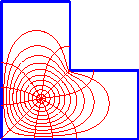
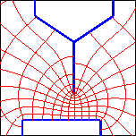
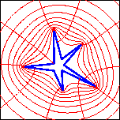
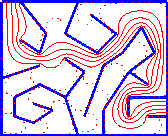

|
Schwarz-Christoffel mappingMy book, Schwarz-Christoffel Mapping with L. N. Trefethen, is now available from Cambridge University Press. A conformal map of a region in the complex plane is an analytic (smooth) function whose derivative never vanishes within the region. Graphically, a conformal map transforms any pair of curves intersecting at a point in the region so that the image curves intersect at the same angle. Conformal maps are both mathematically interesting and practically useful. Because of the preservation of angles, a conformal map of a square grid in the plane results in a curvilinear orthogonal grid. Furthermore, the transplantation by a conformal map of a solution to Laplace's equation is still a solution in the image region, so that conformal maps can be used in heat transfer, electrostatics, steady fluid flows, and other phyiscal applications in which Laplace's equation arises.  In general it's impossible to write down a simple formula for the conformal map from one region to another. But for the important special case of a map from the upper half-plane (Im z > 0) to a polygon, there is such a formula, discovered independently by Schwarz and Christoffel in the 1860's. There are two catches, however. The first is that except for some very simple polygons, the formula requires an integral that has no closed form. The second, more fundamental catch is that you first need to find out the values of some unspecified constants in the formula. These constants are the "pre-images" of the vertices of the polygon on the real axis. To find these prevertices, you need to solve a set of highly nonlinear equations. Both of these issues can be surmounted by using a computer. In the late 1970's Nick Trefethen publicly released the Fortran package SCPACK, which is a fast and reliable tool for maps between the unit disk and a polygon. Subsequently, I have written (with Trefethen's blessing) the natural successor to SCPACK, the Schwarz-Christoffel Toolbox for MATLAB. MATLAB is an interactive high-level environment for numerical analysis and scientific computing.The SC Toolbox exploits its interactivity and powerful graphics, making the computation of conformal maps easier and more flexible than ever before. In addition, the toolbox adds maps to and from the half-plane, a strip, and a rectangle, and maps from a disk to the exterior of a polygon.  A limitation of every traditional numerical conformal mapping method goes by the name of crowding. This occurs whenever the target region has elongated or pinched regions. Steve Vavasis and I wrote a paper describing a new algorithm for SC mapping that avoids the problems normally encountered with crowding. This algorithm is based on complex cross-ratios and Delaunay triangulations, and it allows the solution of problems that are not feasible for any other algorithm we know of. The new method is incorporated into the latest version of the toolbox. You can read a detailed overview of an older version of the SC Toolbox, which appeared in the June 1996 ACM Transactions on Mathematical Software. You can also download the toolbox. It runs best under version 6 of MATLAB (though an older version for MATLAB 4.1 still exists). In conjunction with Doug Arnold, who has put together a wonderful page of graphics for complex analysis, I have created a few animations illustrating Schwarz-Christoffel maps. |